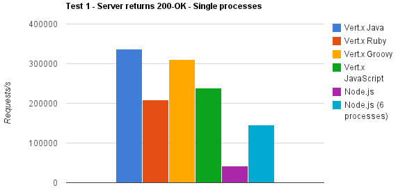
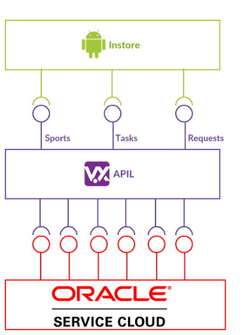
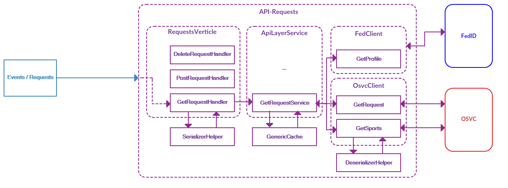

Présentation et retour d'expérience
Sommaire
- Vertx c'est quoi ?
- Quelques exemples de features
- Vertx dans le contexte Décathlon
- Nouveautés de la version 3.5
- Conclusion
Vertx c'est quoi ?
Un framework événementiel
- Une boîte a outils inspirée de Node.js
- Permet de créer des serveurs web performants
- Repose sur la notion de verticle
- Utilisé par beaucoup d'entreprises connues
Polyglotte
Scalable
- A l'exception des verticles "workers", Vertx est non bloquant
- Les réponses sont reçues de manière asynchrone
- Très bonnes performances !
- Peut être réparti entre plusieurs machines
Qu'est ce qu'un Verticle ?
- Verticle = classe qui "expose" des handlers
- Les verticles peuvent être écris dans différent langage
- Une instance Vertx maintient N threads d'Event Loop
- Un verticle est rattaché a un seul thread
- Les verticles communiquent via event bus
Fonctionnement de l'Event Loop
Vertx vs NodeJs

Quelques exemples de features
Routing et handlers
HealthCheck
HealthCheckHandler.create(vertx).register("healthcheck", future -> {
future.complete();
});Config
ConfigStoreOptions fileStore = new ConfigStoreOptions()
.setType("file")
.setOptional(true)
.setConfig(new JsonObject().put("path", "config.json"));
ConfigStoreOptions sysPropsStore = new ConfigStoreOptions()
.setType("sys");
ConfigRetrieverOptions options = new ConfigRetrieverOptions()
.addStore(fileStore)
.addStore(sysPropsStore);
ConfigRetriever retriever = ConfigRetriever.create(vertx, options);Event bus
//Envoyer
vertx.eventBus().send("TEST", message);
//Recevoir
final EventBus bus = vertx.eventBus();
final MessageConsumer consumer = bus.consumer("TEST");
consumer.handler(message -> {
System.out.println("incoming message: " + message.body());
}); Circuit Breaker
CircuitBreaker breaker = CircuitBreaker.create("circuit-breaker",
vertx, new CircuitBreakerOptions()
.setMaxFailures(5)
.setTimeout(2000)
.setFallbackOnFailure(true)
.setResetTimeout(10000)
);
breaker.execute(future -> {
//...
}).setHandler(ar -> {
//...
});Vertx dans le contexte Décathlon
Origine du projet
- Besoins d'accès aux données CRC stockées dans OSVC.
- Problème 1 : OSVC renvoie les données sous forme de "rapport".
- Problème 2 : OSVC ne peut pas être appelé directement par certaines applications.
- Problème 3 : OSVC est parfois lent a répondre.
Quelle solution ?
- Nécessité de développer une couche de "nettoyage" des données.
- Couche devant faire passerelle entre OSVC et Instore.
- Couche devant être non bloquante.
Schéma global
Points "clés" de l'APIL
- La partie Core permet de générer les handlers a partir de la swaggerDoc.
- Référentiels et KPI stockés en cache.
- Transformation de données effectuée par Jackson.
- Parrallélisation des traitements avec les Futures Vertx.
- Orienté ressources.
Un exemple de cheminement
Quoi d'autres sur l'APIL ?
- Couplé depuis quelques mois avec Spring Boot.
- Chaque ressource est exposée au sein d'un conteneur.
- Orchestration avec Rancher.
- Déploiements effectués via Rundeck.
- Bientôt remplacé par WebFlux.
Nouveautés de la version 3.5
- Support Java 9.
- Support OpenAPI 3 (OpenAPI3RouterFactory).
- Validation des requêtes HTTP (HTTPRequestValidationHandler).
- Support des coroutines Kotlin.
- Depuis la 3.5.1, support de JUnit 5.
Conclusion
+ Simple a prendre en main.
+ Souple et polyglotte.
+ Performances.
- Pas en annotation, pas d'injection de dépendance.
A tester => WebFlux